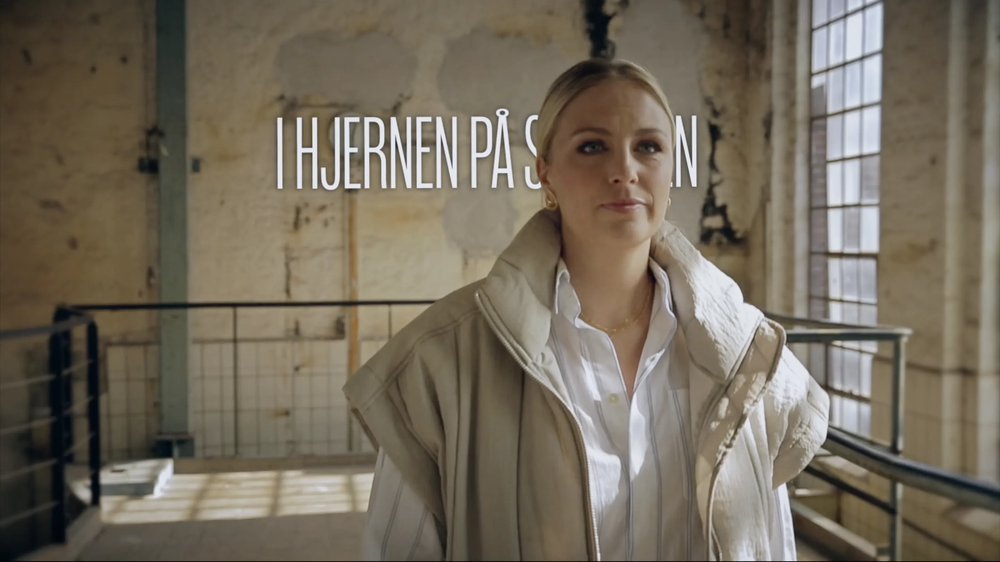
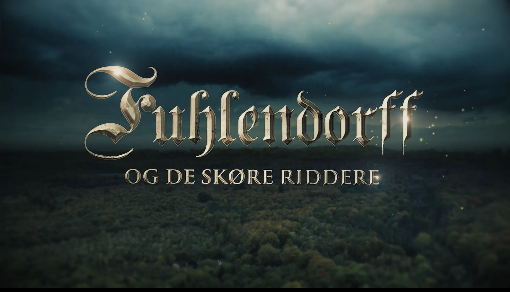
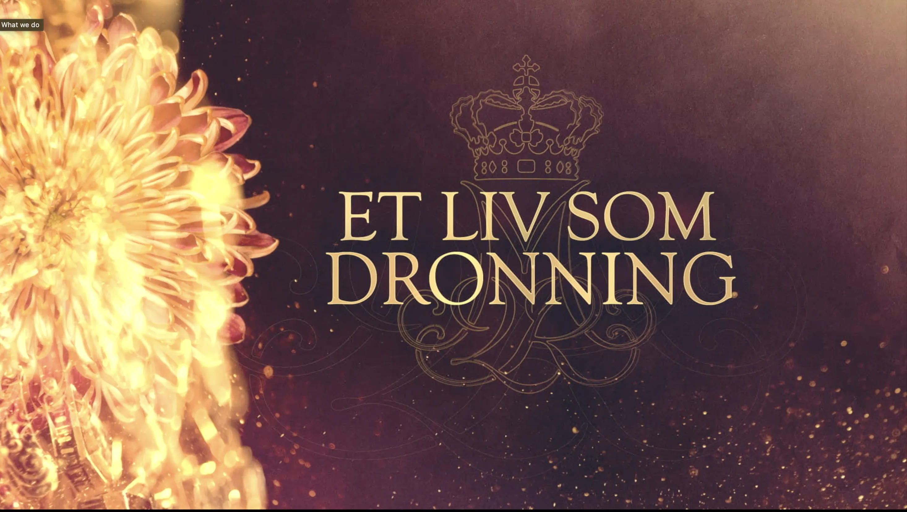
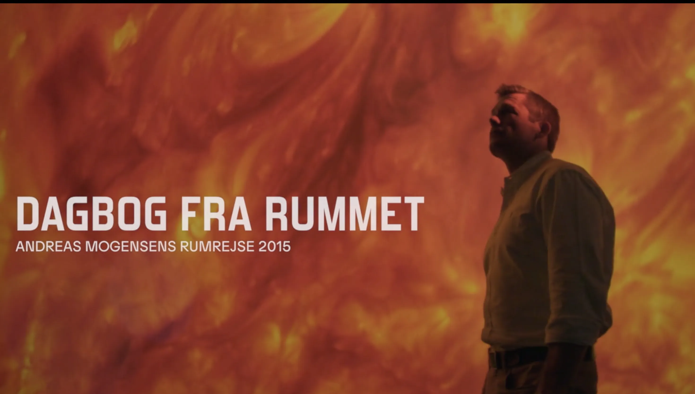
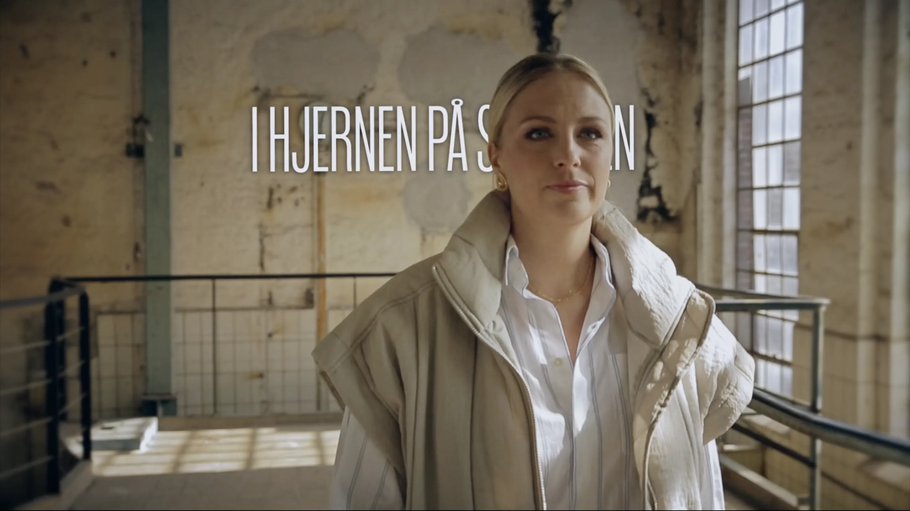
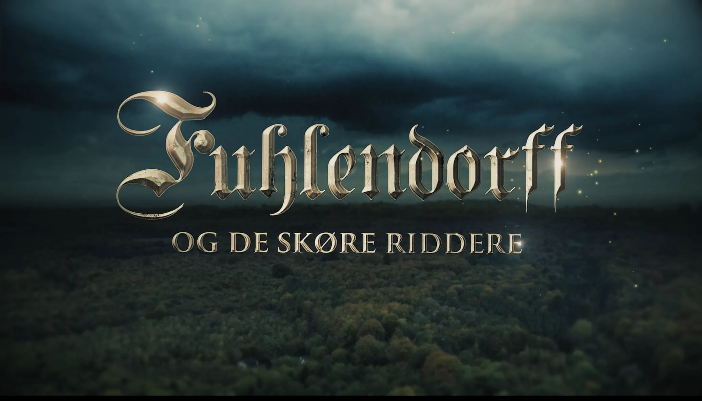
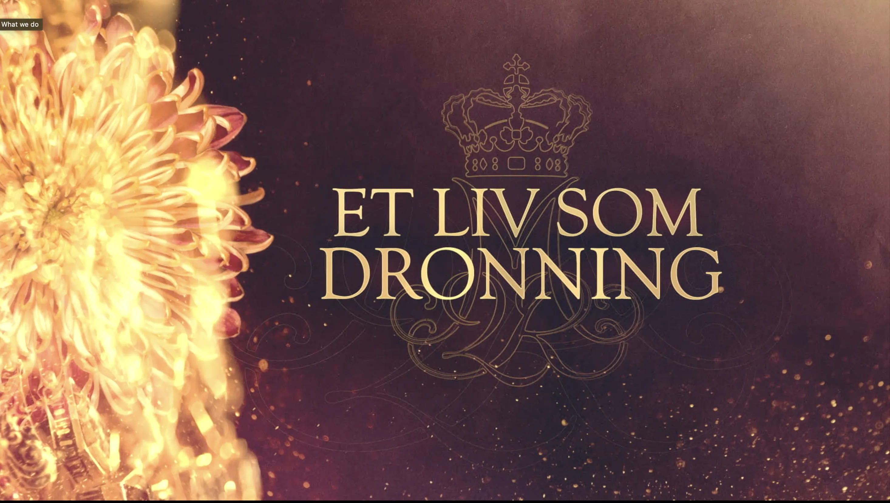
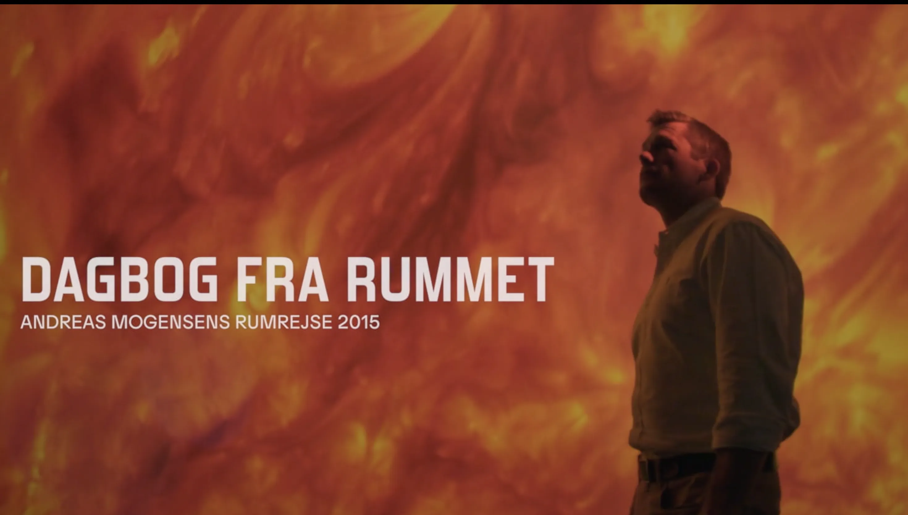

tilbage til temaer
05
Grundlæggende indhold
I tema 5 introduceres vi til forståelse og producering af indhold, herunder hele produktionsforløbet i optagelse af video, lyd og redigering. Her skal programmerne Adobe Premiere Pro og Audition tage sig i brug, hvor redigeringen skal foregå. Her arbejdes med LottieFiles, der er animeret vektorgrafik. Igen kigges på optimering af brugergrænsefladerne og medieproduktionen. Her undersøges filformater og videoplatforme. I dette emne tages første gang fat i GitHub i sammenhæng med gruppearbejde, da der også arbejdes på et virksomhedsplan. Her skal optimeres af eksisterende hjemmeside, igen med fokus på brugeroplevelse og design, medbringelse af LottieFile. Al samarbejde i gruppen og kodning sker gennem GitHub repository.
Opgaverne 05.01.01 Passionssite og 05.02.01 Virksomhedssite
I første opgave skal der individuelt laves et simpelt site om en person med en passion. Her skal planlægges optagelse af videomateriale, lyd og foto. Indholdet skal redigeres til en et minut lang video med biroller, der opsummerer personens passion. Til sitet skal laves en vektorgrafik (LottieFile) til dynamik på sitet.
Til anden del arbejdes der i grupper. Her arbejdes med redesign af en hjemmeside for en eksisterende virksomhed. Det indeholder tekst, foto og indhold fra forrige side med et nytænkt design. Her var projektstyring også en essentiel del, og derfor også arbejdet med SCRUM-arbejdsform. Der udvikles en digital prototype på Figma med tests til det endelige kodede site. Det kodede site bliver et samarbejde mellem alle gruppemedlemmer gennem GitHub.
Min løsning:
I tema 5 fik jeg udviklet en passionside, dedikeret til Mads Levorsen, med en passion for podcasts og fodbold. Fra optagelser og lyd blev der redigeret en et minut lang video, som blev vedlagt mit passionssite. Jeg fik udvalgt de bedste fotos, der også udgør indholdet på siden. Videoen er linket på siden med bl.a. et video-tag, og en LottieFile er indsat for effekt.
Til anden del af opgaven blev der skabt en rekreation af Tikimedia.dk's eksisterende website. I gruppearbejdet fik jeg arbejdet med siden "Projekter", der har indholdet af Tikimedias arbejde. Derfor fik jeg fremstillet et oplagsværk til deres foregående projekter, hvilke årstal de blev produceret, og tilhørende link til ekstra læsning og henvendelse. Med nyt tema og redesign ser siden meget anderledes ud, men med fokus på brugeroplevelsen, der bekræfter succesen gennem brugertests. Alt arbejdet blev lagt sammen i et samlet repository på GitHub.
Processen i samarbejdet gik efter deadlines. I første del af opgaven fik gruppen hurtigt fundet passion og redskaber til optagelse af video og lyd. Derefter skulle Premiere Pro afprøves ved fremstilling af en et minut lang video på præcis 60 sekunder. Her blev indsat alt materiale, før en gennemgang og klipning fandt sted. Herefter blev filter, lydoptimering og overgange vedlagt. Forarbejde skete fortsat på Figma med de nødvendige designovervejelser. Alt indhold blev lagt på hjemmesiden, og derfra skulle der prøves kræfter med LottieFiles.
I sammenhæng med virksomhedssitet fik gruppen udvalgt en side, der ikke havde meget indhold. Derfra oprettede gruppen et SCRUM-board, der gjorde det nemmere at holde overblik over arbejdet. Ligeledes blev der oprettet et repository på GitHub, så gruppen kunne samarbejde i hver deres VSC-dokument. Opgaverne i arbejdet blev fordelt, og alle fik ansvaret for en side. Med research og indhold blev der oprettet en Figma-fil, der lagde sted til en hi-fi prototype, der blev klikbar. Brugertests gav grønt lys til kodning, der gav virksomhedens site et helt nyt udtryk, med større hensyn til brugeroplevelsen.
Med mine kodningsfærdigheder på daværende tidspunkt lagde det grundlag for det endelige produkt. Med den testede hi-fi prototype kunne sitet kodes derefter. Her blev der tilføjet de kodningsfærdigheder og designteorier, der gav mening for virksomhedens udtryk.
De vigtigste færdigheder, jeg tog med fra tema 5:
- LottieFiles og tanken bag dem: Hvordan de fremstilles, og i hvilke sammenhænge de giver mening.
- GitHub og dets samarbejdsmuligheder: Med et professionelt værktøj til sammenspil af kode mellem gruppemedlemmer.
- Video tilknyttet kode på hjemmesider, der gør det muligt at se videoen gennem siden, fremfor gennem link.
- SCRUM-arbejdsprocessen, med udgangspunkt i den bedste arbejdsproces.
- After Effects og hvordan det bruges i sammenhæng med LottieFiles.
I tema 5 blev jeg en del klogere på filredigering og lydredigering. Jeg fik et bedre indblik i LottieFiles og behovet i sammenhæng med bæredygtighed. Jeg fik en kort introduktion og fik navigeret lidt i programmet. Til fremtidige, mere professionelle arbejdssammenhænge kan GitHub være et godt redskab til den bedste arbejdsproces mellem gruppemedlemmer, også i en SCRUM-sammenhæng.
Gå til hjemmesiden - passionsite ->http://mayamaya.dk/kea/05_indhold/passionsite/website/passion.html
Gå til hjemmesiden - virksomhedsite ->http://mayamaya.dk/kea/05_indhold/virksomhedssite/website/index.html
Gå til Figma - virksomhedssite -> 







I opgaven med passionssite blev der redigeret et minuts video, der skulle indsættes på siden. Videoen er gemt på computeren og derfor lagt ind med en videokode. Den har derefter fået størrelse via CSS-koden. Den kan også indsættes med en YouTube-kode i et iframe-kodeelement.
I virksomhedsite-koden indsættes logoet i bunden. Med media query er det muligt at gøre logo-rækken responsiv til desktop. Da der i mobilesite ikke er plads til mere end fire stk., bliver de næste fire synlige ved 800px. De er lagt ind i HTML’en, men har fået display: none-koden i mobilversionen.